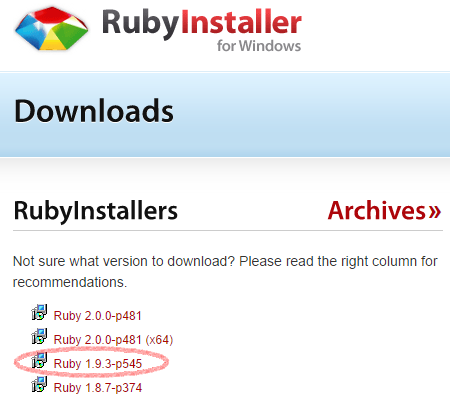
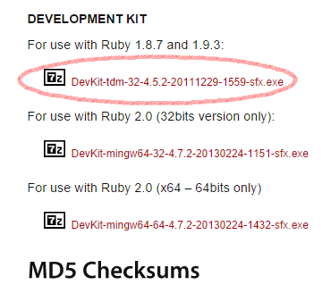
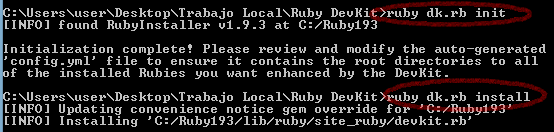
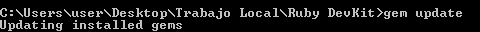
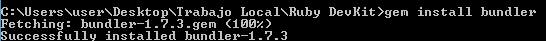
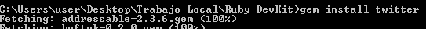
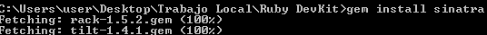
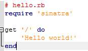
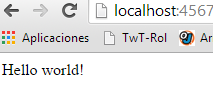

Tutorial para la instalación de Ruby en Windows.
-
Instalación de Ruby en Windows:
-
Usaremos la pagina web de Ruby Installer para descargar lo necesario. Descargaremos la version mas estable (1.9.3) y el DevKit correspondiente


Ejecutamos el ".exe" de ruby y lo instalamos (si queremos podemos dejar todas las opciones por defecto). Luego descomprimiremos el DevKit.
Para instalar completamente el DevKit ejecutaremos la consola de windows "cmd" y nos pondremos en el directorio donde hayamos descomprimido el DevKit. Entonces usamos los comandos "ruby dk.rb init" y "ruby dk.rb install" en ese orden.
-

4. Podemos comprobar que ruby (la versión que queremos) está instalada con un simple ***"ruby -v"*** en la propia consola.
-
Actualizando, instalando y probando las gemas:
- Ahora actualizaremos las gemas con el siguiente comando "gem update" :

2. Momento entonces de instalar bundler introduciendo desde la propia consola ***"gem install bundler"*** :

3. Luego procedemos a instalar la gema twitter y sinatra con un ***"gem install twitter"*** y ***"gem install sinatra"*** :


4. Probaremos la gema sinatra con una pequeña aplicación en ruby. Creamos el fichero hello.rb escribimos el siguiente codigo y lo ejecutamos.


Santiago Sainz Fdez.